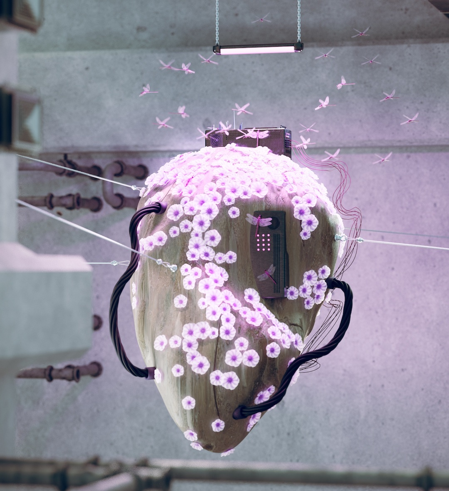

An experimental short-film illustrating a symbiosis of carbon-based and silicon-based lifeforms. In a nidus, insects and machines create a cocoon of their own, apart from human intervention. A place for growth, nourishment and reinvention. A synergistically formed organism evolving in midst of concrete monoliths, resisting a fixed state of nature and in constant exchange with its environment.

»Nidus« is immersing the viewers into the symbiosis of carbon-based and
silicon-based lifeforms. In a nidus, hybrid insects and machines autonomically create a cocoon of
their own, apart from human intervention. A place for growth, nourishment and reinvention. A
synergistically formed organism in a constant state of evolution in midst of concrete
monoliths, resisting a fixed state of nature. The film is opening questions about the potential of
decentering the human, leaving space to discuss non-human intelligence. An environment where
non-anthropomorphic forms of artificial intelligence and natural intelligence meet.
The project is touching upon a couple of subthemes, such as: Futurism, Philosophies
of the future,
The post-Anthropocene. It opens a space for debate about less human-centeric ways of thinking about
technology and nature. Most of the visual representation of AI and technology we see in media is
anthropomorphic. This leads to a biased debate about the potentials and the future of technology.
Further it excludes the viewpoint of non-human lifeforms in nature. »Nidus« aims to break the
normative viewpoints that currently lead the debates about AI and opens the discussion to a broader
spectrum of imagination in a playful way.
The film is aiming to broaden the horizon and imagination of the audience. It
activates a playful
way to think about the future and what potentials lie in other intelligences apart from the human
one. This might lead the audience to develop a kind of curiosity and compassion towards nature, but
also technology as an entity. Further it might activate more philosophical questions about the
essence and nature of technology and AI as an entity with its own agency, however in a less
dystopian way than usually projected.